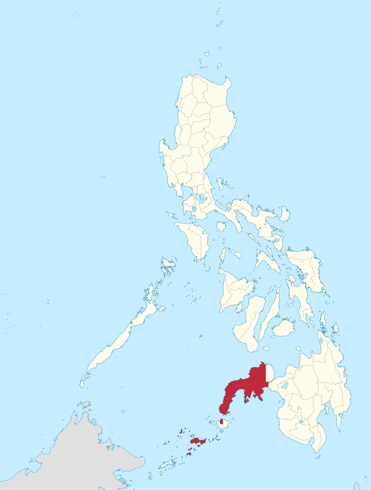

Who were we?
What did we
accomplish?
A permanent digital institution that documents, preserves, verifies, measures, and publicly communicates the history, brotherhood, service, and social contributions of the Triskelion — proving what Brotherhood actually looks like when practiced.
“We do not preserve Triskelion history simply to remember who we were. We preserve it so every generation understands what Brotherhood requires of them next.”
THE FOUNDATIONAL PHILOSOPHY
Six Permanent Pillars
The architecture governing how the brotherhood documents mutual aid, measures societal contribution, and upholds accountability.
AUDITABLE SERVICE METRICS
National Impact Dashboard
14 Verified Cause Domains (Aligned with UN Sustainable Development Goals)
OCTOBER 4, 1968 · UP DILIMAN
Founding Fathers Archive
Permanent historical dossiers documenting the visionaries of the Triskelions’ Grand Fraternity (Tau Gamma Phi).
CHRONOLOGICAL RECORD
Historical Timeline
Trace the trajectory from the UP Diliman inception through nationwide collegiate and regional expansion.
PERMANENT CHAPTER IDENTIFIERS
Chapter Genealogy Tree
A permanent lineage tracking mother chapters, sponsoring councils, and regional expansion.
Demonstrating how local councils document every collegiate batch, barangay chapter, and community service project into the canonical national framework before nationwide rollout.
THE HUMAN SIDE OF HISTORY
Stories of Brotherhood
Documenting real accounts of brothers supporting brothers through disaster, education, and adversity.
DUBLIN CORE STANDARDS
Digital Museum
Preserved historical manuscripts, textiles, charters, photographs, and oral citations.
VERIFIED SOCIETAL CONTRIBUTION
Notable Triskelions
Members distinguished in medicine, law, academia, engineering, and public leadership.
HUMANITARIAN CAUSE DRIVE · DUGONG ALAY, DUGTONG BUHAY
National Blood Donation Drive
Mobilizing brothers, sisters, and community donors across the Philippines for emergency blood reserves.
Official Triskelion Philippines partners with local Red Cross chapters, provincial hospitals, and regional councils to supply urgent blood transfusion needs.
Recent Cause Pledges
Safe Brotherhood & Accountability
A model fraternity makes member safety, dignity, and legal compliance transparent and non-negotiable.
Under the Anti-Hazing Act of 2018 (RA 11053), all forms of hazing in school-based and community-based organizations are strictly prohibited. The Triskelion Legacy & Impact Platform enshrines active accountability:
- Zero Tolerance: Strict ban on all physical, psychological, and degrading acts during recruitment and initiation.
- Sanctioned Standards: All activities must have council registration and authorized safety monitoring.
- Member Rights: The inviolable right of every candidate and brother to bodily integrity and dignity.
- Confidential Triage: Whistleblowing reports are routed to an encrypted, restricted safety channel.
INSTITUTIONAL MEMORY
Search the National Archive
Instant search across chapters, pioneer batches, projects, museum artifacts, and brotherhood stories.
PRESERVING TRUTH TOGETHER
Contribute to History
Submit historical photos, documents, oral memories, or suggest a verified correction.
No Record Is Lost When Preserved Together
Do you have an old chapter photograph from the 1980s? An original charter? A story of how brothers mobilized during a local disaster? Or did you spot an error in a timeline date?
- Provide original provenance or source if known.
- Include approximate year, chapter, and city.
- Every submission is assigned a tracking ID and routed to Council Historians.
- Corrections preserve prior versions in the audit log for historical transparency.
OFFICIAL EXECUTIVE TERMINAL
Leadership & Contributor Portal
Secure gateway for National Council Officers, Regional Historians, Council Verifiers, and Chapter Heads.
Executive Council & Historian Access
Restricted to verified fraternity leadership. Authenticate with your authorized Google account to view the real-time Blood Donation Registry, audit historical contribution queues, and review incoming records.
hello@weforgeweb.com · Firebase Enterprise Identity
INSTITUTIONAL INTEGRITY
Transparency & Governance
The Triskelion Legacy & Impact Platform operates under strict non-partisan archival methodologies:
ZAMBOANGA PILOT CONTEXT
Regional Geographic Context
Research-stage geographic context illustrating the flagship pilot jurisdiction in Western Mindanao.

Rights and attribution note: Creative Commons attribution is strictly preserved. Research-stage geographic context only; no official organizational coverage or jurisdiction is inferred.